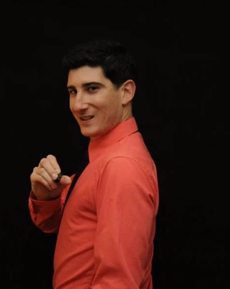
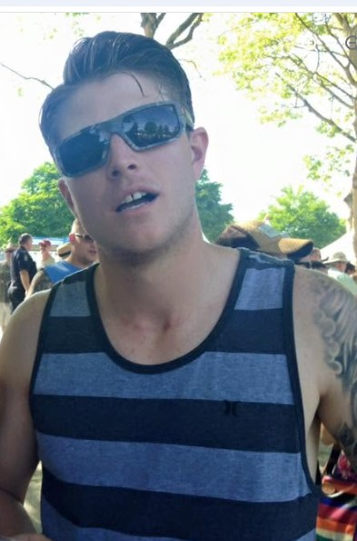

KEVIN "MANBEARPIG" DAVIS
Subject Of An Ongoing Ladner Fantasy Football League Investigation
BC's Most Trusted Source for Ladner Fantasy Football League Coverage
Subject Of An Ongoing Ladner Fantasy Football League Investigation
The British Columbian Troller Network has upgraded Kevin Davis' Fantasy Football Confidence Level To:
Experts recommend exercising caution when reviewing championship predictions.
Counter continues to increase pending further notice.
Kevin Davis has announced this is finally his year, marking the thirteenth consecutive season that this statement has been made.
Schimmy declined comment but confirmed the league office remains aware of the situation.
Analysts continue searching for evidence supporting Kevin's confidence.
| Category | Rating |
|---|---|
| Draft Confidence | 100% |
| Group Chat Activity | Missing In Action |
| Trade Offers Sent | 0 |
| Trade Negotiation Skills | Untested |
| Waiver Wire Confidence | Unlimited |
| Outside Opinions Considered | 0% |
| Prediction Accuracy | Under Investigation |
| Belief This Is His Year | 100% |
| Actual Results | Classified |
"Every season starts with optimism. Then Kevin starts making moves."

"Statistically speaking, the confidence level remains impressive."

"The facts continue to disagree with Kevin's projections."
"No comment. I don't know what I'm doing either."
"Well, they never change the rules that I ask for that will directly benefit me, so I also have no comment."
| Position | Member |
|---|---|
| Commissioner | Schimmy |
| Senior Insider | Roy |
| Champion* | Dylan |
| Consultant | Darcy |
| Rules Correspondent | Barry |
| Subject Of Investigation | Kevin Davis |
| Rank | Team |
|---|---|
| 1 | The Waiver Wire |
| 2 | Auto Draft |
| 3 | A Coin Flip |
| 4 | Random Internet Rankings |
| 5 | Kevin Davis |
Kevin predicts greatness.
Kevin predicts more greatness.
Analysts begin asking difficult questions.
Evidence remains limited.
Experts remain unconvinced.
Confidence reaches historic levels.
League members request supporting data.
Investigation ongoing.
UNDER CONSTRUCTION
BCTN historians continue searching for suitable artifacts.